Four families
The four styles are clastic metasediment-hosted polymetallic veins (), Mississippi Valley-type (), its Irish-type relatives, and Kupferschiefer-type sediment-hosted copper. CMPV ore sits in veins in metasandstone, metasiltstone, metaconglomerate and even metavolcanics. MVT and Irish ore replaces carbonate. Kupferschiefer ore is very fine grained and finely banded in carbonaceous black shale. slides 1 and 2 lecture recording, 27 Oct
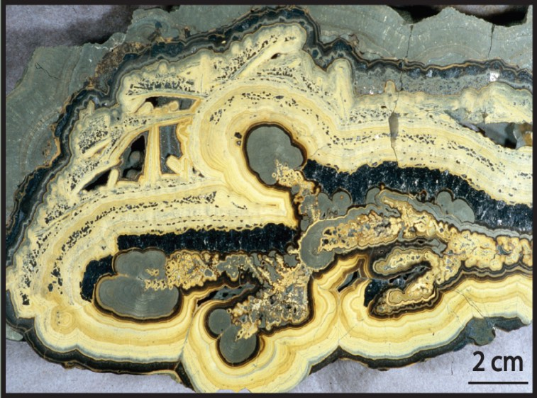
Describe the banding. Did these minerals grow into open space or replace something solid?
Show what I see
- Concentric, rounded, cream to yellow-brown bands wrapping around darker grey patches, like layers of an onion.
- Branching dark grey growths between some bands.
So the pale bands are sphalerite (low-iron, pale) and the branching grey growths are dendritic galena. Both grew into open space, layer by layer. This is MVT ore from Upper Silesia, Poland. slide 28 (Leach et al., 2005)
CMPV deposits
CMPV deposits are often called granite-intrusion-related polymetallic veins. They are spatially and often genetically linked to felsic intrusions, usually large batholiths, but not to porphyry copper systems. They are complex polymetallic deposits, with veins rich in silver and base-metal sulphides. The granite can be several kilometres away: you might drill a deposit and need to go many kilometres further to hit the granite. slide 3 lecture recording, 27 Oct
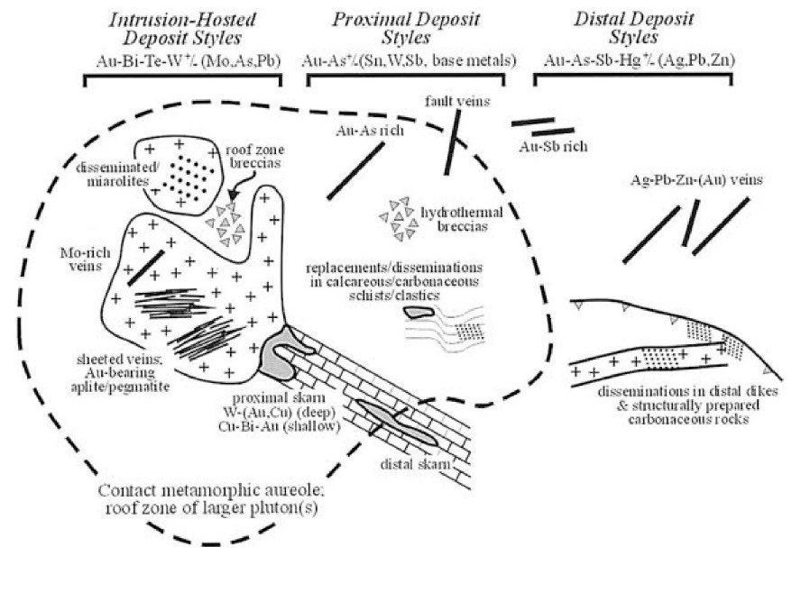
They form under mesothermal conditions, around 6 km and 250 to 300 °C, much like orogenic gold, from fluids of 0 to 26 wt% salinity, anywhere from 0 to 10 km deep. The veins are strongly structurally controlled, tied to fault zones or to structures secondary to crustal-scale shear zones. The host basins can be (1) continental margins that began as epicratonic embayments on passive margins, (2) collisional boundaries at intracontinental or intraoceanic subduction zones (the Harz Mountains, Příbram), or (3) continental, oceanic or back-arc marginal basins (Keno Hill). They sit in Pb-Zn provinces that often also hold SEDEX deposits, and they form late, after compression or extension. slides 5 and 6
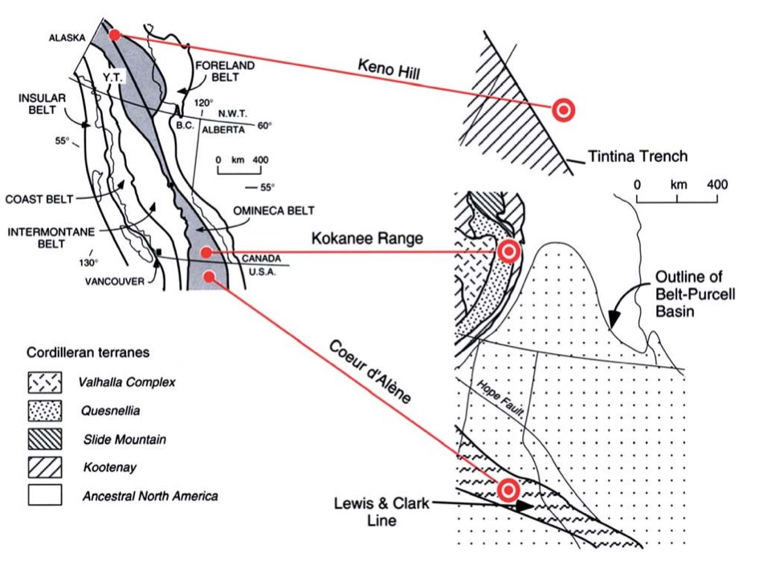
Webbs, Conrad and the silver giants
The classic districts are Kokanee Range, Keno Hill, Coeur d’Alene, the Harz Mountains and Freiberg in Germany, Příbram in the Czech Republic, Guangzhou in China, and the New England Orogen of NSW and Queensland. Not a major deposit class, but extremely rich in silver. slides 7 and 8 lecture recording, 27 Oct
Compare the silver
Tonnages and grades from slides 8 and 9 (Coeur d’Alène is production to 1965, more than 100 Mt). Contained silver = Mt × g/t.
In NSW, both main CMPV deposits are in the southern New England Orogen. Conrad (458 000 t at 600 g/t Ag, 8% Pb, 4% Zn, 1.5% Cu and 1.5% Sn), near Inverell, is hosted in the granite itself. Webbs (1.49 Mt at 245 g/t Ag, 0.71% Pb, 1.56% Zn and 0.27% Cu), near Emmaville, sits in dark metasiltstone away from the granite. Deeper in Webbs, drilling started hitting wolframite and cassiterite: the vein system grades toward the granite-related Sn-W system of Lecture 15. Silver, lead and zinc are the low-temperature end, far from the granite; tin and tungsten are the high-temperature end, close to it. slide 9 lecture recording, 27 Oct
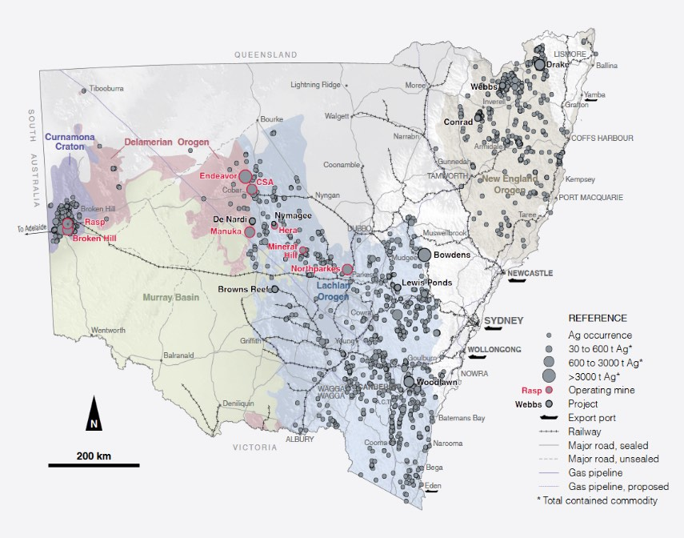
CMPV hosts, alteration and minerals
The hosts are thick, monotonous sequences of fine- to medium-grained clastic sediments with minor carbonate, mafic and tuff units, metamorphosed to at least greenschist facies (at Webbs, dark grey to black carbonaceous rock). Wall-rock alteration (sericite, silica, pyrite) is restricted to a few metres around the veins, so it’s a poor vector. Large zones of hydrothermal bleaching, from loss of iron, are much better: they can extend for kilometres. slide 10 lecture recording, 27 Oct
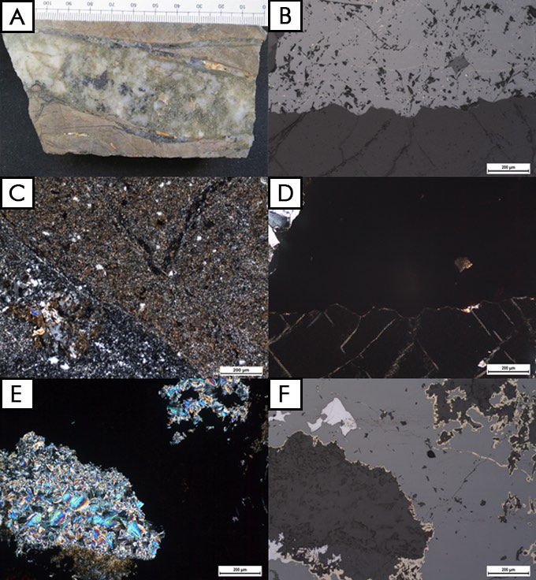
Look at A. Describe the host rock’s colour and what crosses it. What would you log?
Show what I see
- Pale, bleached siltstone (Fe has been removed).
- A quartz vein with siderite and disseminated sulphide, a thin massive sulphide veinlet, and dark green chlorite.
So you’d log a bleached siltstone cut by a quartz-siderite vein with disseminated sulphide and a massive sulphide veinlet, plus chlorite: classic CMPV gangue and ore, with the bleaching as your wider vector. slide 13 lecture recording, 27 Oct
The ore is mostly galena, sphalerite and tetrahedrite-tennantite, with minor pyrite, chalcopyrite, arsenopyrite, stibnite, native silver and a complex suite of silver sulphosalts (pyrargyrite, stephanite, bournonite), especially around Freiberg and Příbram. , the silver-rich tetrahedrite named after Freiberg, usually comes late: silver arrives after the main sulphides, at lower temperature. Near granites you also get tin: sphalerite with exsolved stannite. Arsenopyrite is an early alteration phase but a nuisance, because smelters penalise arsenic. Gangue is quartz and carbonate (dominantly siderite, with minor dolomite, ankerite, calcite), plus minor barite, fluorite and magnetite. Calcite and dolomite usually come late, when meteoric water floods the dying hydrothermal system. slides 11 to 13 slide notes lecture recording, 27 Oct
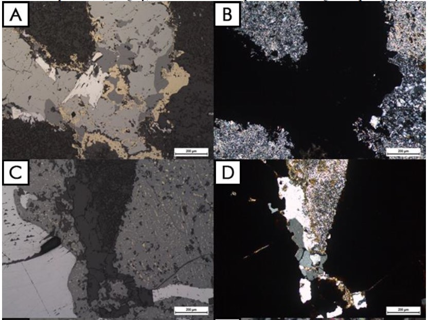
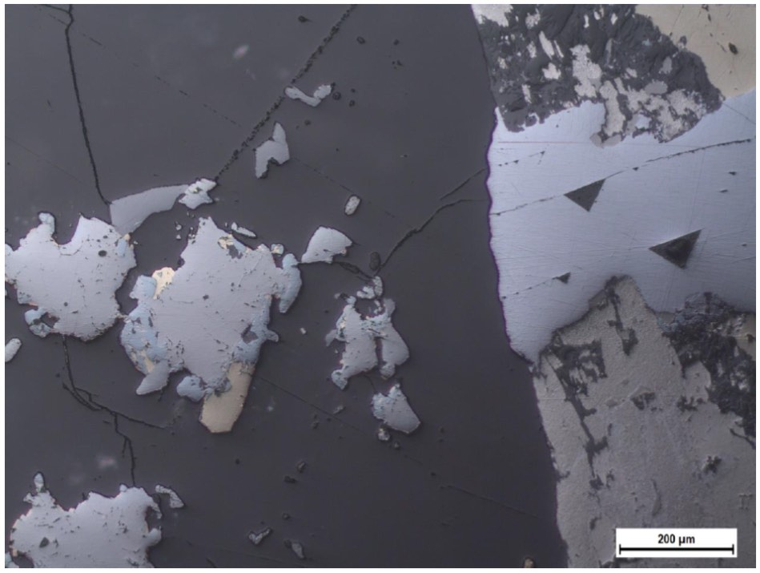
Find the black triangles in the bright grain on the right. Which mineral do they identify, and what is the small yellow patch on the left?
Show what I see
- A bright white grain with black triangular pits lined up in rows.
- Irregular pale grey grains on the left with a small brassy yellow patch, in dark grey non-reflective gangue.
So the bright grain is galena: triangular pits from plucking along its cubic cleavage are its giveaway. The yellow patch is chalcopyrite, and the dark background is quartz-carbonate gangue. Freibergite, arsenopyrite and sphalerite with stannite are the other minerals labelled from Webbs on this slide. slide 12
- Webbs silver mine is in the lab ore suites (polymetallic vein). Expect quartz-siderite veins with galena, sphalerite and tetrahedrite group minerals (freibergite), minor arsenopyrite and chalcopyrite, in bleached, sericitised metasiltstone.
- In reflected light: galena white with triangular pits; tetrahedrite-freibergite grey with a slight olive or brownish tint; sphalerite darker grey, possibly with stannite blebs.
CMPV textures and genesis
CMPV veins are multiphase, with complex sequences and a variety of textures: , , colloform banding and textures. Sulphides come as coarse massive sulphide and fine disseminations, and later deformation, brecciation or shearing can wipe out the primary textures. slide 14
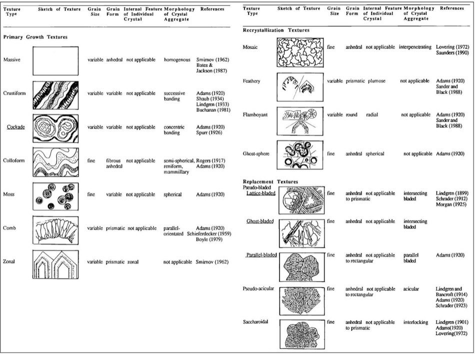
Three genetic models compete, and the real answer is probably a mix, because most studies look at single deposits. (1) Magmatic differentiation: a volatile fluid from a differentiating (often mafic) magma, concentrated in chalcophile Ag, Pb, Zn and Cu, discharges up faults, with mafic and lamprophyre dykes as evidence. (2) Deep crustal faults: deep faults are first-order conduits for deep-sourced carbon, lead and fluid (seen in isotopes), and ore forms by local boiling and mixing with cooler meteoric and upper-crustal water in subsidiary structures, as in orogenic gold. (3) Intrusion-related: a nearby crystallising intrusion is only the heat engine at 250 to 300 °C; the metals and fluids are exchanged meteoric and metamorphic waters from the country rock. This last one is used for Webbs. slides 15 to 18 slide notes lecture recording, 27 Oct
Which genetic model?0 / 3
Mississippi Valley-type
MVT deposits are named after classic districts in the Mississippi River drainage of the central USA, and they hold about 24% of the world’s sediment- and volcanic-hosted Pb-Zn resources. They are epigenetic, formed tens to hundreds of millions of years after their host rocks, at low temperature (about 50 to 250 °C, mostly 90 to 150 °C), from basinal brines of 10 to 30 wt% NaCl. They have no spatial or temporal link to igneous rocks, which separates them from skarns and other intrusion-related Pb-Zn. They are commonly stratabound, locally stratiform. slides 19 and 20 slide notes
Deposits range from 0.2 Mt to 95.3 Mt (Navan), averaging about 7 Mt at 7.9% Pb + Zn, and they come in districts of up to 400 deposits: find one and you’ll find more. Silver is a minor by-product (median 37 g/t). Some are mined for other things: fluorite in Illinois, barite in England. In Australia MVTs hold about 8% of Zn-Pb-Ag resources (about 10.7 Mt Zn, 5.9 Mt Pb and 4888 t Ag). The Lennard Shelf in WA has deposits of 2 to 20 Mt, typically 2 to 4 Mt at about 12% Pb + Zn. Sorby Hills is the biggest Australian MVT resource; the recording notes that a shallow aquifer makes it difficult to mine. slides 21 and 22 lecture recording, 27 Oct
Most MVTs sit in passive-margin platform carbonates in the forelands of orogens, in contraction or thrust belts. The Canning Basin (Lennard Shelf) is an exception: its deposits formed during extensional faulting as the basin turned into a passive margin. slide 23 lecture recording, 27 Oct
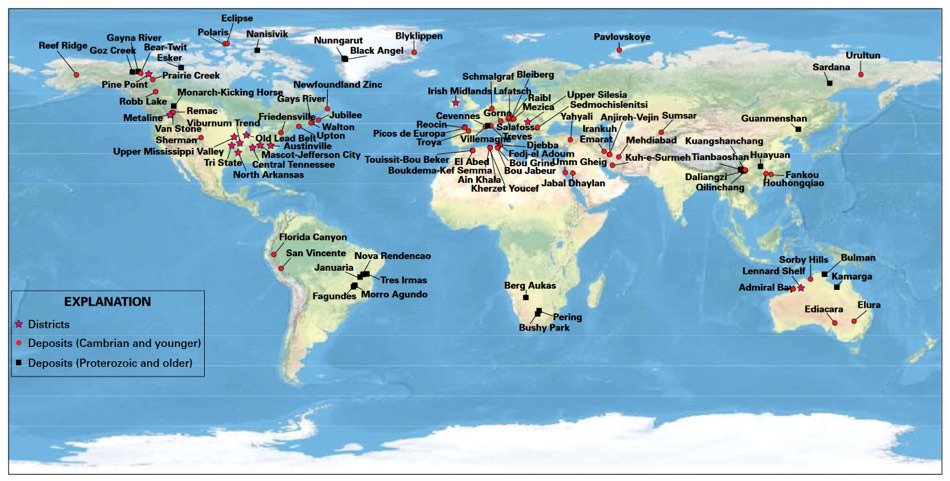
MVT ores and how they form
Hosts are dolostone or limestone in platform carbonate sequences; dolostone-hosted deposits are generally larger and richer in Pb, Zn and Ag, probably because dolostone transmits fluid better (limestone-hosted Navan is the exception). Alteration is dolomitisation, dissolution of the host and brecciation; silicification is minor, more in hotter systems. Early acid fluid dissolves the carbonate and makes collapse breccias and voids, so the permeability is mostly secondary, and the ore fills it. slide 25 slide notes lecture recording, 27 Oct
The ore is simple: sphalerite and galena with lesser pyrite and marcasite, some silver, little copper. The Viburnum Trend in Missouri is the complex exception, with Cu, Co, Ni and Sb sulphides. Gangue is carbonate (dolomite, siderite, ankerite, calcite), with barite and fluorite minor or absent, though some deposits are dominated by them. Sulphide mostly replaces carbonate, with some open-space fill; grain size runs from extremely fine to crystals over a metre, and caves can open up with calcite crystals 2 m across (test for gas first: hydrocarbons can leave carbon monoxide). slides 26 and 27 lecture recording, 27 Oct
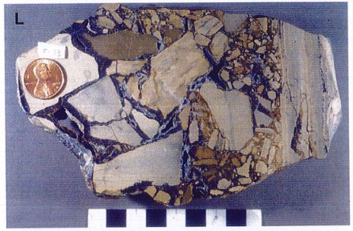
The blocks are carbonate, the dark seams sulphide. What made the breccia, and when did the sulphide arrive?
Show what I see
- Angular blocks of pale carbonate that fit back together, separated by thin dark sulphide seams.
So this is a dissolution collapse breccia: the carbonate was dissolved, the roof collapsed into blocks, and hydrothermal fluid then altered the breccia and filled and replaced the gaps with sulphide. Collapse first, ore second. Upper Silesia, Poland. slide 28 (Leach et al., 2005)
How do they form? Multiple basinal brines with contrasting reduced sulphur and metal contents mix. The metals, and the sulphur, come from the detrital rocks of the basin. The carbonate host was once a reduced environment with abundant hydrocarbons and organic matter; when oxidised basin water carrying metals as chloride or sulphate complexes met that organic matter, the redox reaction destabilised the complexes and Pb and Zn sulphides precipitated. Ore formation is tied to major crustal tectonic events: a stable carbonate platform suddenly uplifted or squeezed. That’s the animation at the top. slides 29 and 30 lecture recording, 27 Oct
| MVT | Source or cause |
|---|---|
| Metals | Detrital sedimentary rocks of the basin |
| Sulphur | Biogenic H₂S or sedimentary sulphide |
| Fluid | Connate (pore) water |
| Fluid circulation | Compaction? Tectonic deformation? Sea-level rise? (all queried on the slide) |
| Precipitation | Redox reaction as oxidised basin water meets organic matter in carbonate |
slide 30
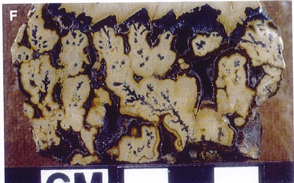
Irish-type
Irish-type deposits are transitional: stratabound, structurally controlled, carbonate-hosted Pb-Zn with both SEDEX and MVT characteristics, often treated as an MVT subset. They emerged as a class in the 1970s and early 1980s, when the big Irish Midlands deposits were read as synsedimentary or early diagenetic. Unlike MVTs, they have a close spatial and temporal link to volcanism, and mineralisation happens mostly during diagenesis, in partly to wholly lithified sediment. slides 31 and 32 lecture recording, 27 Oct
Deposits are typically under 10 Mt at 5 to 6% Zn, 1 to 2% Pb and 30 g/t Ag (up to 90 g/t), with trace Cu, Cd, As, Ni and Co; the slide notes give Navan as 90 Mt at 10.5% Pb + Zn, Lisheen 14.4 Mt at 11.7% Zn and 2% Pb, and Galmoy 6.7 Mt at 11.9% Zn + Pb. They form on carbonate ramps in extensional basins on extending continental margins, concentrated on the downthrown blocks of normal faults, some in ramp-relay systems; those faults were the fluid pathways. Hosts are non-argillaceous carbonate (mainly limestone) in mixed carbonate-siliciclastic successions, with dolomitisation, Mn halos in some deposits and rare silicification. slides 32 to 34 slide notes
The sulphur is dominantly bacterial. Ore is sphalerite and galena with minor pyrite, chalcopyrite, arsenopyrite, tennantite and Ni-Co minerals (cobaltite, niccolite); silver sits in tennantite, galena and sphalerite. Exposed at the surface, the oxide zone adds cerussite, anglesite, smithsonite, limonite and pyromorphite, and paid for early mining. Gangue is dolomite, calcite and quartz; barite is common and locally the economic product; fluorite is extremely rare. Two genetic models compete: syngenetic seafloor deposition (stratiform geometry, bedded and clastic sulphides, similar ages for ore and host) and diagenetic to epigenetic replacement (replacement and open-space textures, few laminated sulphides, alteration above the lenses, no seafloor oxidation). The real answer is probably both. slides 35 to 37 lecture recording, 27 Oct
Syngenetic or replacement?0 / 5
Kupferschiefer: sediment-hosted copper
deposits, or stratiform sediment-hosted Cu, are hosted in reduced, carbonaceous sedimentary rocks from shallow marine or lacustrine settings, full of in-situ organic matter. The ore zones are thin, generally under 30 m and commonly under 3 m, and follow the layering. They rank just behind porphyries as a copper source, about 23% of world production, and are important for silver and cobalt; some carry Pb, Zn, U, Au and PGE. Grades average about 2% Cu and 50 ppm Ag, with by-products of Pb, Zn, Au, Ni, Pt-Pd, Re and Se. Poland’s Kupferschiefer and the Central African Copperbelt are the giants. slides 38 and 39 slide notes lecture recording, 27 Oct
They form in intracontinental rifts, at the junction between oxidised aeolian red-bed sandstones and more reduced shales, carbonates and evaporites, in rocks laid down within 20 to 30° of the palaeo-equator, in desert conditions. Hosts are siltstone, shale, aeolian sandstone and dolomite over hematitic red beds. Bleaching extends for kilometres: it can be traced into equivalent red beds, showing the sandstones were once red and lost their Fe³⁺. Rapid rifting and subsidence set basin fluids moving; copper dropped at the redox interface between oxidised and reduced rocks, helped by bacterial sulphate reduction in a sulphidic (euxinic) setting. slides 40 to 42, 45 lecture recording, 27 Oct
The ore is chalcocite and covellite, with bornite, chalcopyrite, native copper, galena, low-Fe sphalerite and silver minerals; near-surface oxide ore is malachite, azurite, chrysocolla and cuprite. Gangue is dolomite, calcite, anhydrite, gypsum, barite and marcasite; ore is fine-grained and disseminated, cementing grains, in veinlets and replacements, sometimes nodular where it replaced anhydrite. Unmineralised zones hold framboidal pyrite. slides 43 and 44
Walk off the red beds0 / 5
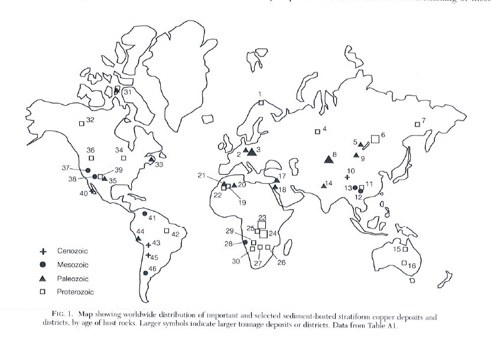
Manuka
Manuka, about 90 km SSW of Cobar in NSW, is a silver deposit of three open cuts (Manuka, Boundary and Boundary South) on the western Winduck Shelf of the Cobar Basin, an intracratonic basin in the Palaeozoic Lachlan Orogen. It’s a low-grade, carbonate-hosted Pb-Zn deposit similar to MVT and Irish types, formed on a stable shelf with open platform carbonate and reef, with no igneous link: the limestone onlaps much older, eroded granite. slides 46 to 50 lecture recording, 27 Oct
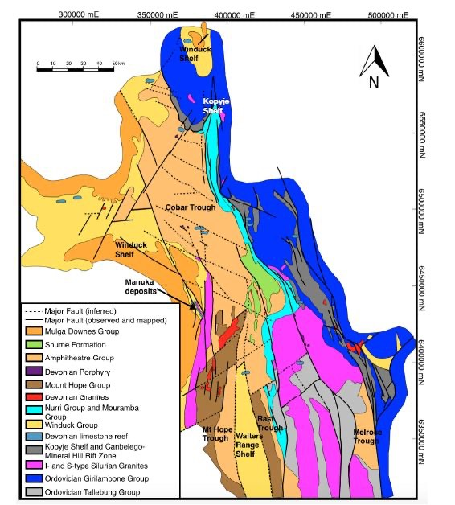
It has two styles. Secondary oxide ore sits in Fe- and Mn-bearing clays above the limestone, residue left when the impure limestone weathered and dissolved, keeping its silver (around 30 g/t); this is what’s mined. Primary sulphide ore comes as pyrite-dominant mineralisation in black calcareous shale just above the carbonate, and as galena-sphalerite in fossiliferous dolomitic limestone at the top of the carbonate sequence (more like an Irish type and an MVT, respectively). Ore is low-Fe sphalerite, pyrite and galena, with silver in acanthite (Ag₂S); gangue is dolomite, calcite, quartz, smoky quartz and minor barite. slides 48 to 51 lecture recording, 27 Oct
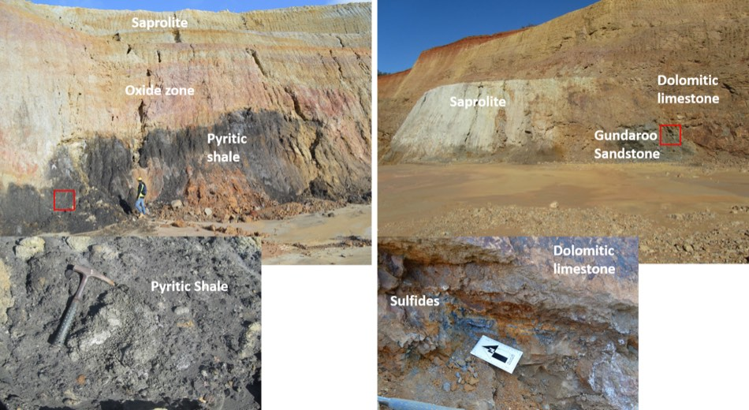
From top to bottom, what layers can you see in the pit, and which one carries the silver that’s mined?
Show what I see
- Weathered saprolite and an oxide zone at the top, then black pyritic shale, then dolomitic limestone, over sandstone.
- Sulphide pockets in the limestone.
So the silver being mined is in the oxide zone clays above the limestone. Underneath are the two primary styles: pyrite-rich black shale and galena-sphalerite in the dolomitic limestone. slide 49 lecture recording, 27 Oct
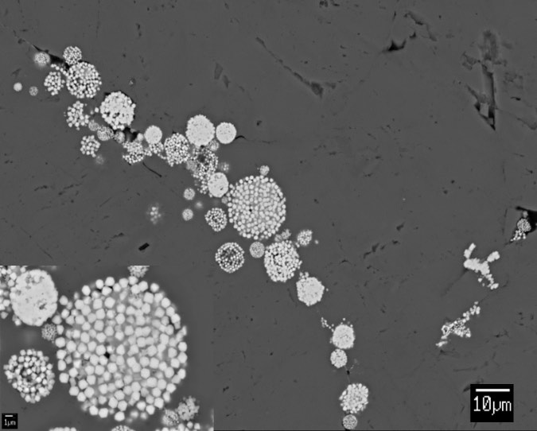
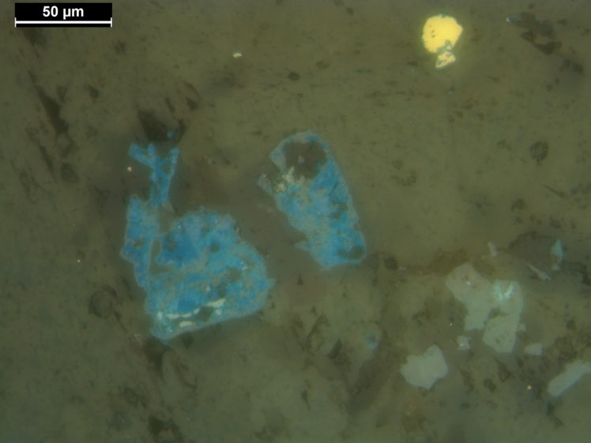
What are the raspberry-like spheres in A, and the blue mineral in B?
Show what I see
- A: spheres a few to tens of µm across, each packed with tiny crystals.
- B: patches with a strong indigo-blue colour in reflected light.
So A is framboidal pyrite, typical of low-temperature, organic-rich, bacterially influenced sediment such as Manuka’s black shale. B’s blue is covellite (CuS), unmistakable in reflected light; chalcopyrite is rare here. slides 51 and 52
Fluid inclusions in calcite give ore temperatures of about 80 to 110 °C, classic MVT. But cavities in the limestone hold big smoky quartz crystals, with calcite, that grew in several stages, probably during tectonic events, and their inclusions suggest around 220 °C: a hot end-member of MVT. slide 50 lecture recording, 27 Oct
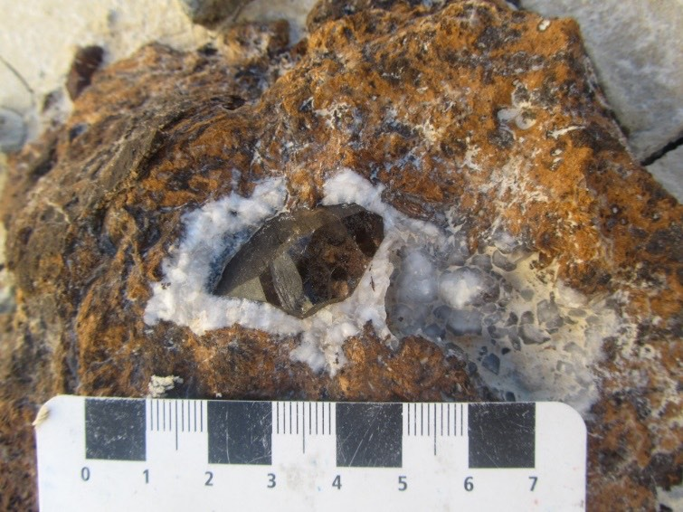
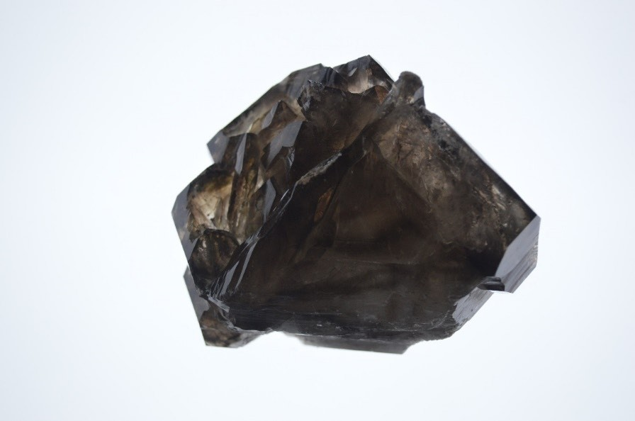
Telling them apart
| CMPV | MVT | Irish-type | Kupferschiefer | |
|---|---|---|---|---|
| Host | Greenschist clastic metasediments | Platform dolostone, limestone | Limestone on a carbonate ramp | Reduced shale over red beds |
| Form | Structurally controlled veins | Stratabound replacement, open space | Stratabound lenses on normal faults | Thin stratiform zones |
| Temperature | 250 to 300 °C | 50 to 250 °C, mostly 90 to 150 | Diagenetic | Low (diagenetic) |
| Igneous link | Granite, distal | None | Associated volcanism | None |
| Metals | Ag, Pb, Zn (± Cu, Sn) | Zn, Pb (± Ag, F, Ba) | Zn, Pb, Ag, Ba | Cu, Ag, Co |
| Trap | Faults, boiling, mixing | Organic matter, redox | Faults, bacterial S | Redox front |
slides 5 to 45
Classify the deposit0 / 6
- CMPV: Ag-Pb-Zn veins in greenschist metasediments, distal to batholiths, 250 to 300 °C; bleaching is the vector. Webbs, Conrad, Keno Hill, Coeur d’Alene.
- MVT: epigenetic Zn-Pb in platform carbonates, 90 to 150 °C, 10 to 30 wt% NaCl brines, no igneous link; organic matter traps the ore.
- Irish: diagenetic, normal-fault controlled, barite common, fluorite rare.
- Kupferschiefer: thin Cu ore at the red bed / reduced shale redox front; ~23% of world Cu.
Self-test
Answer out loud or on paper before you open each one. Claim the ounces if you got it.
Glossary and flashcards
Terms this lecture assumes or defines quickly. The dotted words in the text open them in place.
Flashcards
Where this goes next
Put this lecture next to Lecture 9: SEDEX, MVT, Irish and Kupferschiefer are all basin-brine deposits, differing in when the brine moved and what trapped the metal. CMPV veins belong with Lecture 15, as the cool, distal end of a granite system.